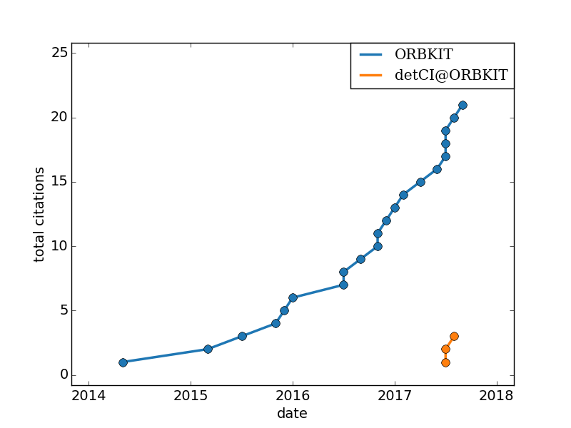

Literature¶
Complete list of papers citing ORBKIT and detCI@ORBKIT:
| # | Publication |
|---|---|
| 1 | Gunter Hermann et al. Phys. Rev. A 89, 7 (2014). |
| 2 | Jhon Fredy Perez-Torres J. Phys. Chem. A 119, 2895–2901 (2015). |
| 3 | Tatiana Gomez et al. Molecules 20, 13830–13853 (2015). |
| 4 | Gunter Hermann et al. J. Phys. Chem. C 119, 25606–25614 (2015). |
| 5 | Matthias Berg et al. Mol. Phys. 114, 1356–1364 (2015). |
| 6 | Vincent Pohl et al. Phys. Rev. A 93, 10 (2016). |
| 7 | Gunter Hermann et al. J. Phys. Chem. A 120, 5360–5369 (2016). |
| 8 | Efthymios I. Ioannidis et al. J. Comput. Chem. 37, 2106–2117 (2016). |
| 9 | Somayeh Pirhadi et al. J. Mol. Graph. Model. 69, 127–143 (2016). |
| 10 | Beate Paulus et al. Phys. Rev. A 2016. |
| 11 | Vincent Pohl et al. J. Phys. Chem. C 120, 28808–28819 (2016). |
| 12 | Dongming Jia et al. Chem. Phys. 482, 146–159 (2017). |
| 13 | Karim Elhadj Merabti et al. Phys. Rev. A 2017. |
| 14 | Vincent Pohl et al. J. Comput. Chem. 38, 1515–1527 (2017). |
| 15 | Dennis J. Diestler et al. J. Phys. Chem. A 121, 5332–5340 (2017). |
| 16 | Gunter Hermann et al. J. Comput. Chem. 38, 2378–2387 (2017). |
| 17 | Gunter Hermann et al. Chem. Phys. Lett. 683, 553–558 (2017). |
| 18 | James T.A. Gilmour et al. J. Chem. Phys. 147, 154307 (2017). |
| 19 | Matt J.P. Hodgson et al. J. Phys. Chem. Lett. 8, 5974–5980 (2017). |
| 20 | Kai Töpfer et al. J. Phys. Chem. A 122, 2307–2317 (2018). |
| 21 | Maxim V. Ivanov et al. J. Am. Chem. Soc. 140, 4765–4769 (2018). |
| 22 | Sang-Yeon Hwang et al. Phys. Chem. Chem. Phys. 20, 9146–9156 (2018). |
| 23 | Wenli Zou et al. J. Comput. Chem. 39, 1697–1706 (2018). |
| 24 | Rafael Gómez-Bombarelli et al. J. Chem. Theory Comput. 14, 1–24 (2018). |
| 25 | Lisa Suntrup et al. Inorg. Chem. 57, 13973–13984 (2018). |
| 26 | Adrien Stoliaroff et al. J. Comput. Chem. 39, 2251–2261 (2018). |
| 27 | Gunter Hermann et al. J. Phys. Chem. Lett. 9, 6624–6630 (2018). |
| 28 | Raymundo Hernández-Esparza et al. Int. J. Quantum Chem. 2018. |
| 29 | Vincent Pohl et al. arXiv preprint arXiv:1707.07635 (2017). |
| 30 | Dennis J. Diestler et al. J. Phys. Chem. A 121, 5332–5340 (2017). |
| 31 | Gunter Hermann et al. J. Comput. Chem. 2017. |
| 32 | Dennis J. Diestler et al. Chem. Phys. 514, 67–77 (2018). |